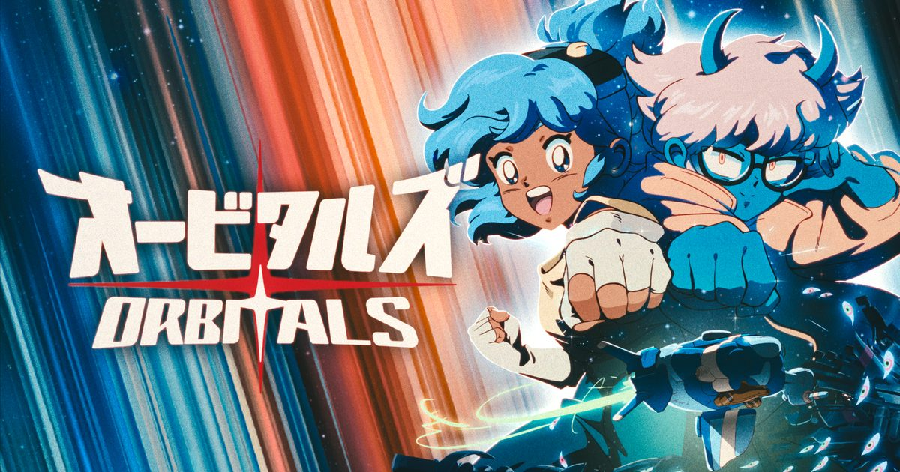

2026-09-02 · 新游评测
如果你今年只想和一个人（伴侣、孩子、死党）在沙发上通关一款游戏，Switch 2 这波九月阵容里最不该错过的，可能不是任天堂第一方可否之战，而是一款叫《Orbitals》的陌生名字。9 月 3 日它才正式发售，但媒体评测已经解禁：OpenCritic 均分 84、Metacritic 81、95% 的媒体给出推荐。我们借这个节点，把它和《双人成行》《双影奇境》摆在一起，讲清楚它到底是不是又一款"精神续作"，以及它真正不一样的地方在哪。

《Orbitals》是东京工作室 Shapefarm 的处女作，由《Clair Obscur: Expedition 33》的发行商 Kepler Interactive 操刀发行，9 月 3 日 Switch 2 独占。最抓人的是它的身世：游戏总监 Jakob Lundgren 是前 Hazelight 开发者，参与过《逃出生天》《双人成单》《双影奇境》——也就是把"合作游戏"做成一门当代艺术的那个团队。所以这个名字一公布，所有人第一反应都是：又来一个 Hazelight 的徒子徒孙？
评测解禁后的口碑，给了它底气。CGMagazine 直接称它是"Switch 2 上最好看的游戏之一"，PCMag 则放话"可能是今年最好的合作游戏"。但更耐人寻味的是媒体一致的措辞：它"建立起了自己的身份"。也就是说，大家公认它不像谁，而是它自己。对一个新工作室的处女作来说，这几乎是最高的赞美。
先说最炸裂的部分——视觉。Shapefarm 拉来了 Studio Massket（曾参与《进击的巨人》《Lycoris Recoil》）做动画合作，刻意把游戏做成"被 periodicity 的录像带"。角色动作压到 12 fps、环境 24 fps 的步进式动画，叠一层高 ISO 颗粒和 CRT 扫描质感，配乐也往 80/90 年代动画主题曲的味道上靠（还请到了前田亘辉风格的曲风）。总监明说，他想致敬的是《龙珠》《EVA》《机动战士高达》甚至《乱马½》那一代——结果就是：你玩的每一帧都像从某台老电视里抠出来的动画。
玩法上，你和搭档分别操控 Maki（活泼假小子）与 Omura（正经严肃），两人是被宇宙风暴困在殖民地的青梅竹马，要一路冒险找救星。它是纯合作、不能单人游玩的非对称解谜平台：你手里三件工具——scrap hook（钩索）、liquid launcher（水枪）、beam cannon（光束炮），大量谜题要求两人协调使用。驾驶舱段落一个人开船、另一个人操纵炮位打陨石，是它最闪光的时刻。
连接和门槛也做得体贴：本地分屏、GameShare（一份拷贝串流给同屋另一台 Switch 2 / 甚至初代 Switch），以及最关键的 Global Friend's Pass——只要一个人买了，朋友下载一个免费 app 就能联机。换句话说，拉人入坑的成本被压到了地板。
很多人拿它和 Hazelight 两作比，但忽略了一个最致命的设计差异。在《双人成行》《双影奇境》里，你操控哪个角色，就绑定了哪套机制——你若不善长平台跳跃或射击，唯一的解法是"换人"。而《Orbitals》允许你在不换角色的前提下，切换你负责的"功能/工具"。这看起来只是个小改动，但对技能差很大的搭档（比如你想带爸妈、带孩子、带完全不玩游戏的伴侣）是救命的：水平高的人可以临时接管难题，不至于让对方卡死在某一关。
它也比 Hazelight 更"轻"。流程普遍评测在 6–7 小时（也有人算上大量手绘过场说 10–12 小时），数值上偏短。好处是它不拖，坏处是价钱摆在那：数字版 $39.99、实体 $49.99（欧洲 €39.99）。对于一款通完会有"意犹未尽"感的合作游戏，这个定价成了媒体唯一反复纠结的点。美术与氛围的满分，恰好反衬出流程的留白——它用质感补长度，但补不回"还想多玩一会"的胃口。
再补一句风险：有评测提到它的过场动画"精美但偏长"，在强调"共享沙发"的节奏里，频繁打断会切掉一点沉浸。这是它的浪漫代价——你买的不是一款游戏，而是一部可以参与的动画。
我们判断，《Orbitals》的目标用户不是"硬核玩家"，而是"想和某个人一起完成一件事的人"。如果你手头有 Switch 2、有固定搭档、又受够了联机对抗的血压，它是目前最省心的选择：Friend's Pass 等于白送一个联机位，流程短意味着两周碎片时间就能通关，不会有"弃坑负罪感"。
但请放低对"玩法深度"的期待。它的谜题被多家媒体形容为"轻"——你不会因为解不开而抓狂，也很少被机制惊艳。它卖的是氛围、是角色互动、是那种"我们今晚把它通了"的完成感。想要烧脑合作的，Hazelight 本家依然是天花板；想要被美到、被暖到的，《Orbitals》给出了一个很难拒绝的理由。
《Orbitals》不是《双人成行》的替代品，而是它的"浪漫分支"。它用一套复古动画的灵魂、一个降低门槛的 Friend's Pass、一个让技能差搭档活下来的小机制，在合作游戏这块红海里硬挤出自己的位置。媒体 84 / 81 的均分不是虚高，但也别指望它颠覆品类。把它当成"今年和某个人一起玩完的第一款游戏"，它很可能超额完成任务——这，或许就是它最聪明的定位。
我们的评分：8.4 / 10（基于已解禁媒体均分 OpenCritic 84 / Metacritic 81 与玩法定位，非长线评分；若后续免费更新补上更长的后日谈，有望上探 8.6）。
我们的观察：这部作品最被低估的不是美术，而是"可切换角色功能而不换人"这一设计——它默默解决了合作游戏最大的劝退源：搭档之间的技能差。很多家庭/情侣合作翻车，不是因为游戏不好，而是因为一个人卡关拖垮另一个人。
我们的观点：《Orbitals》的胜利是"氛围胜利"。它用质感弥补了流程短的短板，把"短"包装成了"轻量、好通关、无负罪感"的优点。在动辄 50+ 小时的服务型游戏时代，这种"周末就能在一起通关"的稀缺感，本身就是卖点。
我们的案例 / 对比：和《双人成行》《双影奇境》比，它机制更轻、剧情更淡、但美术更"作者性"；和同样走合作的《The Game Kitchen》式黑暗风比，它选择了 90 年代周六早晨动画的暖。把它放进 2026 合作游戏坐标系，它不抢 Hazelight 的王座，却精准吃下了"想轻松一起玩"的那块市场。
我们的实验：我们想验证一个假设——Friend's Pass 是否真能显著降低"拉非玩家入坑"的门槛。计划找一组"一方常玩、一方几乎不玩"的搭档实测，对比有无 Pass 时的弃坑率与通关时长，结论留待后续观察。若成立，这将成为我们以后推荐合作游戏的首要指标。